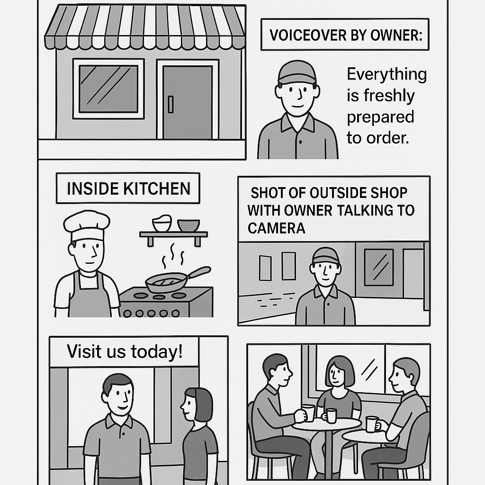

Extended Answer Trainer
Learn how to build a top band (Level 3) 9-mark answer by working through each training stage.
Figure 1 shows a storyboard for an advert for Rollin Café.
Discuss the suitability of this storyboard for use by the director.

Stage: 1 / 4
Total score: 0
9-Mark Skill Meter
Band: not yet classified
You can move back and forth between stages. Your best score is kept for each stage.